화약류관리기사 (2015-09-19 기출문제)
1과목: 일반화약학
1. 주석 또는 납판 내에 용융된 폭약을 채워서 선모양으로 뽑아낸 것으로 폭속은 5500m/s 이상이며 주로 전폭용과 폭속 측정용으로 쓰이는 도폭선은?
- 제1종 도폭선
- 제2종 도폭선
- 제3종 도폭선
- 제4종 도폭선
(정답률: 85%)

2. 다음 중 상황에 따른 폭약의 선정이 적절하지 않은 것은?
- 굳은 암석:정적효과가 큰 폭약
- 수분이 있는 장소:내수성 폭약
- 고온 막장:내열성 폭약
- 강도가 큰 암석:고에너지 폭약
(정답률: 82%)
3. RDX 용어와 관계가 없는 것은?
- Cyclonite
- Hexogen
- T4
- Tetryl
(정답률: 72%)
4. 다음 중 정전기에 영향을 잘 받지 않기 때문에 정전기 발생에 대한 예방이 가장 필요한 화약류는?
- TNT
- 니트로글리세린
- 건면약
- 공업뇌관
(정답률: 88%)
5. 화약 배합제에 대한 설명으로 옳은 것은?
- 산소공급제란 폭발할 때 생성가스를 사람과 가축에 해가 없는 산화물로 하기 위해 배합되는 것으로 나프탈렌 또는 KCI이 있다.
- 감열소염제란 질산에스테르의 자연 분해를 억제하기 위하여 배합되는 것으로 초석이나 규소철이 있다.
- 예감제란 폭약의 감도를 보강하여 증대시키기 위해 배합되는 것으로 TNT가 있다.
- 가연재란 폭발온도를 높이기 위하여 배합되며 질산칼륨, 질산나트륨 등이 있다.
(정답률: 84%)
6. 다음 중 산소평형 값이 가장 큰 것은?
- 니트로글리콜
- 니트로글리세린
- 테트릴
- 피크린산
(정답률: 91%)
7. 시그널튜브식 비전기식되관에 대한 설명으로 옳지 않은 것은?
- 시그널튜브 내부에 코팅되는 화약은 HMX와 Al의 혼합물이다.
- 전기뇌관에 비해 다양한 발파패턴 설계가 가능하다.
- 전용스타터로 기폭되지만 공업뇌관이나 도화선으로도 기폭한다.
- 기폭신호의 전달은 플라스틱 튜브 안에 코팅된 폭약이 폭굉하며 이루어진다.
(정답률: 85%)
8. 연소초시 시험에 따른 도화선 성능 측적 시험에서 도화선 5개의 연소초시를 측정한 평균값의 범위는 얼마이어야 하는가?
- 100~104초
- 100~115초
- 100~120초
- 100~140초
(정답률: 85%)
9. 붉은 불꽃을 발생함으로 위험신호를 알리는 데 사용하는 신호염관(Fire signal)의 주성분은?
- 과염소산암모늄+질산암모늄
- 염소산암모늄+질산암모늄
- 과염소산암모늄+질산스트론튬
- 질산암모늄+질산나트륨
(정답률: 91%)
10. 40% 다이너마이트(약경 32mm, 약량 112.5g)의 순폭시험을 한 결과 순폭도가 8이었다. 얼마 후 재시험을 하였더니 순폭거리가 192mm이었다. 감소한 순폭도는?
- 2
- 4
- 6
- 8
(정답률: 80%)
11. 탄광폭약이 폭발하였을 때 갱내 이상 폭발원인으로 가장 거리가 먼 것은?
- 화염의 길이가 길다.
- 폭발온도가 낮다.
- 폭염 유속시간이 길다.
- 가연성가스와 탄가루가 착화될 수 있다.
(정답률: 72%)
12. 흑색화약의 제조 원료가 아닌 것은?
- 목탄
- 황
- 셀룰로오스
- 질산칼륨
(정답률: 91%)
13. 화약류의 시험 중 동적효과(動的效果)를 측정하는 시험방법은?
- 유리산 시험
- 낙추감도 시험
- 발화점 시험
- 헤스맹도 시험
(정답률: 96%)
14. 다음 중 예감제로 쓸 수 없는 것은?
- NaCl
- DNN
- N/G(nitroglycerine)
- TNT
(정답률: 90%)
15. 다음 화약류 가운데 기폭약이 들어있지 않는 것으로만 이루어진 조합은?
- 교질 다이너마이트 2호, 총용뇌관, DDNP, 연화
- 콘크리트 파쇄기, 무연화약, 전기뇌판, 테트릴
- 흑색화약, 훅카알릿, 도화선, 피크린산
- 공업뇌관, 도화선, 니트로셀룰로스, ANFO 폭약
(정답률: 82%)
16. 다음 중 산소공급제가 아닌 것은?
- 질산칼륨
- 염화나트륨
- 염소산칼륨
- 질산나트륨
(정답률: 87%)
17. 화약류 성능 시험방법 중 폭약 10g을 장전하여 중량 약 17kg의 탄환을 발사시켜, 이때에 구포의 후퇴에 의한 흔들림각을 측정하여 성능을 알아보는 것은?
- 구포시험
- 유리산시험
- 탄동구포시험
- 연주시험
(정답률: 92%)
18. 화약류에 대한 설명으로 옳은 것은?
- 흑색화약은 산소공급제를 포함하지 않는다.
- 일반적으로 화약류는 온도가 오르면 분해속도가 빨라진다.
- 속연 도화선은 심약이 공기와 접촉하므로 연소속도가 느려진다.
- 도화선 TNT를 심약으로 하고 1m 당 20g정도가 들어 있다.
(정답률: 78%)
19. 화약류의 일효과(정적효과)를 측정하는 시험 방법은?
- 유리산 시험
- 낙추 시험
- 연주 시험
- Hess 맹도 시험
(정답률: 96%)
20. 화약류의 자연분해와 자연폭발을 방지하기 위하여 정기적으로 해야 하는 시험은?
- 내열 및 유리산시험
- 타격 및 마찰시험
- 발화점 및 가열시험
- 폭속 및 내열시험
(정답률: 81%)
2과목: 발파공학
21. 디커플링지수(Decoupling index)를 올바르게 설명한 것은?
- 장약경과 순폭거리와의 비
- 최소 저항선과 누두반경과의 비
- 천공경과 장약경과의 비
- 장약장과 천공장과의 비
(정답률: 48%)
22. 발파진동의 제어를 위하여 화강암의 암반(V1=3.7km/sec, p1=2.7g/cm3)에 프리스틀리팅으로 파단면(B)를 형성하였다. 이 경우 A에서 발생하는 발파진동이 B를 통과하여 Cㅇ데 도달하였을 때 진동속도의 감소향은 얼마인가? (단, B에서의 V2=1.2km/sec, p2=2.0g/cm3이다.)
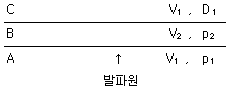
- 23%
- 38%
- 62%
- 77%
(정답률: 40%)
23. 계단식 발파에서 계단높이(H)와 저항선(B)의 비율 H/B가 4보다 작은 경우 제발발파를 한다면 공간격(S)을 구하는 식으로 맞는 것은?
- S=2.0B
- S=1.4B
- S=(H+2B)/3
- S=(H+7B)/8
(정답률: 53%)
24. 공발의 일반적인 원인으로 가장 적절한 것은?
- 폭약이 노화하였을 때
- 암반에 많은 균열층이 있을 때
- 자유면에 경사 천공하였을 때
- 뇌관의 각선이 절단되었을 때
(정답률: 50%)
25. 다음은 Lilly의 발파지수(BI, Blastibility Index)를 나타내는 식이다. 이 식에서 JPO가 의미하는 것은?
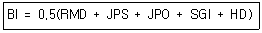
- 절리의 수
- 절리의 간격
- 절리의 방향
- 절리의 거칠기
(정답률: 63%)
26. 다음 수중천공발파 설계 중 옳지 않은 것은?
- 장약작업의 불확실성을 고려하여 경사공의 경우 수직공보다 0.1kg/m3의 비장략을 증가시킨다.
- 진흙으로 암반이 덮여있는 경우, 진흙층의 두께 m당 0.02kg/m3의 비장약량을 증가시킨다.
- 암석층을 보정하기 위해서 계단높이 m당 0.03kg/m3의 비장약량을 증가시킨다.
- 수압을 보정하기 위해서 수심 m당 0.01kg/m3의 비장약량을 증가시킨다.
(정답률: 39%)
27. 전색에 관한 일반적인 설명으로 틀린 것은?
- 전색물로는 물, 점토, 모래 등이 쓰인다.
- 전색이 완전하게 되었을 때 전색게수의 값은 0이다.
- 점토를 전색물로 사용할 경우 수분의 함유량이 증가할수록 발파효과는 높아진다.
- 폭발초기에 발생하는 충격파의 전달로 전색물이 공 밖으로 튀어 나오지 않을 정도로 다진다.
(정답률: 61%)
28. 누두지수의 함수 중 Brallion의 제안식으로 옳은 것은?
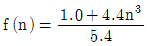
- f(n)=n3
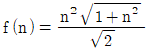
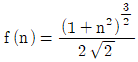
(정답률: 46%)
29. 계단식 발파 시 백브레이크(Back Break)를 줄이기 위한 방법으로 틀린 것은?
- 천공방향을 수직으로 하지 않고 경사를 둔다.
- 천공간격을 최소저항선의 0.8~1.0배 정도로 약간 좁게 한다.
- 전색의 길이는 최소저항선의 1.0~1.5배 정도로 하며, 지나치게 길게 하지 않는 것이 좋다.
- 전회 발파의 파쇄암을 벤치 하부에 일부 두는 것이 좋다.
(정답률: 44%)
30. 다음 발파원리에 대한 설명 중 틀린 것은?
- 암석은 폭약의 폭파에 의해 크게 3단계의 작용을 받는 데 첫 번째 단계에서는 기폭지점에서 시작하여 발파공벽을 부숴 버림으로써 발파공이 팽창한다.
- 두 번째 단계에서는 인장 응력파가 발파공에서 방사형으로 전 주위에 암석의 탄성파 속도와 같은 속도로 확산된다.
- 세 번째 단계에서는 방출된 다량의 기체가 고압으로 갈라진 균열 사이로 들어가서 그 균열을 팽창시킨다.
- 발파공 내의 폭약반응은 매우 신속하여, 폭약의 유효작용은 기폭시점으로부터 매우 짧은 시간 내에 완료된다.
(정답률: 48%)
31. 심발발파 중 Burn-cut에 사용되는 폭약으로 가장 적절한 것은?
- 비중이 크고 마찰감도가 큰 폭약
- 폭속이 빠르고 맹도가 큰 폭약
- 폭속이 느리고 순폭도가 작은 폭약
- 비중이 작고 순폭도가 큰 폭약
(정답률: 53%)
32. 발파에 의한 소음의 저감 대책으로 옳지 않은 것은?
- 완전 전색이 이루어지도록 한다.
- 방음벽을 설치하여 소리의 전파를 차단한다.
- 역기폭 방법보다는 정기폭 방법을 사용한다.
- 벤치 높이를 줄이거나 천공지름을 작게 하여 지발당 장약량을 감소시킨다.
(정답률: 50%)
33. 발파공법을 적용함에 있어 설계 시 안정성 및 효율성도 중요하지만 공사 원가에 대한 경제성도 사전에 검토되어야 한다. 다음 중 경제성 검토에 대한 설명으로 틀린 것은?
- 발파가 대규모일 경우 천공지름이 증가할수록 상대원가는 감소한다.
- 발파가 대규모일수록 소괴의 발생이 많아지므로 적재원가 및 운반원가 등이 감소한다.
- m3당 장약원가는 소구경보다 대구경인 경우 감소한다.
- 발파의 경제성을 검토할 경우 천공원가 및 폭약원가 등은 직접비로 분류하며, 2차 소할의 경우 간접비로 분류하여 생산 원가를 산출한다.
(정답률: 37%)
34. 구멍지름 38mm의 발파공을 곤간격 12cm로 하여 3공을 집중발파하였을 때 저항선의 비는 얼마인가? (단, 장약길이는 구멍지름이 10배로 한다.)
- 1.50
- 1.65
- 1.71
- 1.85
(정답률: 30%)
35. 지발당 장약량 1kg을 사용하여 시험발파를 실시하였다. 폭원으로부터 50m 거리에서 6mm/sec, 100m에서 2mm/sec의 지반진동속도가 계측되었다. 이 자료를 분석하여 자승근 환산식으로 발파진동추정식을 도출했을 경우 기울기는?
- -1.58
- -1.85
- -1.97
- -2.00
(정답률: 30%)
36. 폭약의 기폭 시 폭굉압 전개 상태를 나타내는 다음 그림의 설명으로 옳지 않은 것은?
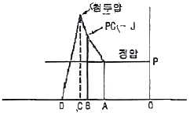
- B점은 폭발 반응이 시작한 직후의 점으로 샤프만쥬게(Chapman Jouguet)면에서의 압력을 나타낸다.
- AB 구간은 폭팔반응에 의한 가스 생성물이 팽창유도하고 있는 부분이다.
- AO 구간은 가스의 유동이 완료된 후의 가스압의 상태를 나타내며 정적압력이라 한다.
- BC 구간은 폭밢반응이 일어나는 부분이다.
(정답률: 53%)
37. 터널발파에서 천방공, 측벽공 및 바닥공과 같은 윤곽공들은 윤곽 밖으로 경사지게 천공해야 하는데 이것을 look-out이라 하며 터널은 설계된 면적을 보유하게 된다. 윤곽공의 천공장이 4m일 때 최대 얼마까지의 look-out을 허용하는가?
- 4cm
- 14cm
- 22cm
- 28cm
(정답률: 45%)
38. A지구에 매립할 3,000,000m3 암반을 발파하고자 한다. 다음과 같은 조건으로 발파를 실시한다고 가정한다면 총 폭약 및 놔관의 예상 소요량은?
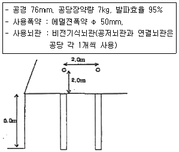
- 폭약-930톤, 뇌관-26.4만개
- 폭약-940톤, 뇌관-26.4만개
- 폭약-930톤, 뇌관-25.4만개
- 폭약-940톤, 뇌관-25.4만개
(정답률: 43%)
39. 다음 그림은 암반 불연속면의 구조와 천공상태에 대한 것이다. 불연속면의 방향과 천공상태에 따른 발파효과의 설명으로 옳지 않은 것은?
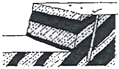
- 폭약의 에너지를 효과적으로 이용할 수 있다.
- 파쇄암의 이동이 좋으므로 긁어 모으기가 좋다.
- 후방 초과굴착현상(Back Break)의 발생이 우려된다.
- 바닥에 그루터기(toe)가 많이 남을 우려가 있다.
(정답률: 56%)
40. 일반 계단식 발파에서 Langefors 식을 이용하여 발파공 하부의 최대저항선을 산출할 때 고려해야 할 변수로 거리가 먼 것은?
- 공간격 대 저항선의 비
- 폭약의 중량강도
- 발파공의 구속정도
- 발파공당 파괴암석의 체적
(정답률: 48%)
3과목: 암석역학
41. Mohr 응력원에 대한 설명으로 옳지 않은 것은?
- σ축의 2개의 절핀(σ1, σ2)은 각각 최대, 최소주응력이다.
- σ-τ축에서 원의 반지름은
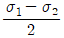
이다. - σ-τ축에서 원의 중심은
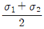
이다. - 최대전단응력은 τmax는 원의 중심 값과 일치한다.
(정답률: 57%)
42. (GSI(Geological Strength Index)를 산정하기 위해 RMR(Rock Mass Rating)을 적용할 경우 암반에 대한 기본 가정으로 맞는 것은?
- 절리가 매우 불리한 방향으로 발달되어 있다.
- 암반은 완전히 건조한 상태이다.
- 절리간격은 100mm 이상이다.
- RQD는 70% 이하이다.
(정답률: 60%)
43. 터널설계와 관련한 경험적 설계방법 중에서 지보를 설치하지 않고 자립할 수 있는 시간을 얻기 위하여 가장 필요한 암반의 공학적 분류법은 어떤 것인가?
- 암반하중 분류법(Terzaghi 분류법)
- RMR 분류법
- RSR 분류법
- Q 분류법
(정답률: 48%)
44. 삼축압축시험에서 구속압의 증가에 따른 시험편의 변형거동에 대한 설명으로 옳지 않은 것은?
- 구속압이 증가함에 따라 강도가 증가한다.
- 구속압이 증가합에 따라 연성거동을 보인다.
- 구속압이 증가합에 따라 최대강도 부분이 축소된다.
- 구속압이 증가합에 따라 최대강도에서 잔류강도까지의 응력감소가 저감되고, 아주 높은 구속압 하에서는 응력감소가 사라진다.
(정답률: 50%)
45. 일축압축시험 결과에 영향을 미치는 내적요인이 아닌 것은?
- 광물조성
- 재하속도
- 밀도
- 공극률
(정답률: 46%)
46. 다음 그림은 원형 단면을 가진 수평갱도의 주벽에 일어나는 응력의 크기(
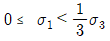
)를 표시하는 그림이다. 여기에서 A, B(음영) 부분의 응력상태는?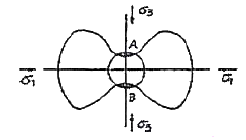
- 압축응력상태
- 인장응력상태
- 전단응력상태
- 무응력상태
(정답률: 53%)
47. 일정 수직하중 조건의 절리면 직접전단시험에 얻어진 전단변위에 대한 수직변위 곡선의 기울기각으로 구할 수 있는 것은?
- 전단강성
- 수직강성
- 팽창각
- 마찰각
(정답률: 40%)
48. 암석의 인장강도 시험법에 따른 인장강도 크기의 일반적인 순서로 맞는 것은?
- 압열인장시험＞휨시험＞직접인장시험
- 직접인장시험＞휨시험＞압열인장시험
- 압열인장시험＞직접인장시험＞휨시험
- 휨시험＞압열인장시험＞직접인장시험
(정답률: 67%)
49. 직경이 5cm인 암석시편을 종방향으로, 16000kg의 인장하중을 주었을 때 횡방향으로 0.0006cm 가늘어 졌다. 이 암석의 포아송비는 얼마인가? (단, 암석의 탄성계수 E=2.1×106kg/cm2)
- 0.31
- 0.37
- 0.44
- 0.49
(정답률: 23%)
50. 무결암의 일축압축강도가 150MPa인 현지암반의 Q값이 20인 경우 무결함의 일축압축강도로 수정한 Q값을 이용하여 구한 탄성파속도(Vp)는 얼마인가?
- 3.5km/s
- 4.0km/s
- 4.5km/s
- 5.0km/s
(정답률: 20%)
51. 절리암반을 구성하는 무결함의 m값(mi)이 20이고, 절리암반의 지질강도지수(GSI)가 70인 경우 절리암반의 m값(mb)과 s값으로 알맞은 것은? (단, m, s는 Hoek-Brown 파괴조건식의 강도정수)
- mb=1.64, s=0.0067
- mb=1.64, s=0.036
- mb=6.85, s=0.0067
- mb=6.85, s=0.036
(정답률: 32%)
52. 경사면 위에 놓여 있는 암반 블록에서 전도는 발생하지만 미끄러짐은 일어나지 않을 조건은? (단, 블록의 밑변 길이:b, 높이:h, 경사면의 각:A1, 마찰각:ø)
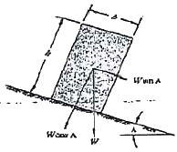
- A＜ø, b/h＞tan A
- A＞ø, b/h＞tan A
- A＜ø, b/h＜tan A
- A＞ø, b/h＜tan A
(정답률: 50%)
53. 초기응력을 측정하는 수압파쇄법의 특징을 응력해방법(overcoring method)과 비교 설명한 것으로 옳지 않은 것은?
- 오버코어링작업이 불필요하기 때문에 그만큼 비용이 절약된다.
- 접근점으로부터 심도가 깊은 곳까지 적용할 수 있다.
- 응력을 직접 측정하는 것이 아니고 변형률을 측정하여 초기응력을 추정하는 방법이다.
- 탄성계수 등을 결정할 필요가 없다.
(정답률: 43%)
54. 암반분류법인 Q 분류법에 대한 설명으로 옳지 않은 것은?
- 암반특성을 평가하여 지보량을 산정하기 위해 Barton 등(1974)에 제안되었다.
- (RQD/Jn) 항은 암반구조를 나타내며, 최대값과 최소값 사이에서 최대 200배 차이가 난다.
- (Jr/Ja) 항은 절리면 또는 충전물의 거칠기 및 마찰특성을 나타낸다.
- (Jw/SRF) 항에서는 터널 굴착 현장에서의 지하수압 및 현장응력 수준이 고려된다.
(정답률: 61%)
55. 평사투영법(streographic projection)에 의해 불연속면들의 극점(pole)을 분석한 결과, 극점이 사면방향과 같은 방향으로 두 곳에 집중되었다. 이 지역에서 예상되는 사면파괴의 형태는?
- 평면파괴
- 쐐기파괴
- 원호파괴
- 전도파괴
(정답률: 48%)
56. 평면 변형률 및 평면 응력 상태에 대한 설명으로 틀린 것은?
- 평면 변형률 상태랑 ϵx=γzx=γyz=0인 상태를 말한다.
- 평면 응력 상태란 평면에 수직한 방향의 응력 성분이 모두 0인 경우를 말한다.
- 평면 변형률 상태에서 z방향의 수직응력 σx는 0이다.
- 평면 응력 상태의 좋은 예는 원형공동을 갖는 평판이다.
(정답률: 23%)
57. 일정하중 하에 암석의 시간(t)에 따른 변형률(ε) 변화가 아래 그림과 같을 때 이러한 크리프(creep) 거동을 가장 잘 표현하는 유변학적 모델은?
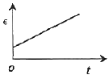
- St. Venant 모델
- Newton 모델
- Maxwell 모델
- Kelvin 모델
(정답률: 42%)
58. 암석에 대한 전형적인 크리프 거동 그래프에서 1차 크리프 구간에서의 크리프 변형률(ε)과 경과시간(t) 간의 관계로 알맞은 것은? (단, ∝는 비례관계를 나타낸다.)
- ε ∝ log t
- ε ∝ In t
- ε ∝ t
- ε ∝ tn
(정답률: 48%)
59. 경도(hardness)의 종류에 따른 시험법의 연결로 틀린 것은?
- 반발경도:Vickers 경도시험
- 압입경도:Rockwell 경도시험
- 인소경도:Mohs 경도시험
- 마모경도:Deval 경도시험
(정답률: 45%)
60. 주응력 좌표계를 따르는 Mohr-Coulomb 파괴조건식에서 점착강도가 20Mpa, 내부마찰각이 46°라면 일축압축강도 값은 얼마인가?
- 82MPa
- 89MPa
- 99MPa
- 120MPa
(정답률: 40%)
4과목: 화약류 안전관리 관계 법규
61. 화약류저장소에 흙둑을 쌓는 경우 설치 기준으로 옳지 않은 것은?
- 흙둑은 저장소의 바깥쪽 벽으로부터 흙둑의 안쪽 벽 밑까 1m 이상 2m 이내의 거리를 두고 쌓을 것
- 흙둑의 경사는 45도 이하로 하고, 높이는 저장소의 지붕의 높이 이상으로 하고, 정상의 폭은 1m 이상으로 할 것
- 흙둑을 부득이 흙담으로 하는 경우에는 흙둑의 높이의 2분의 1 이상으로 할 것
- 2개 이상의 저장소가 인접하여 중간의 흙둑을 같이 사용하는 때에는 그 흙둑에 통로를 설치하지 아니할 것
(정답률: 58%)
62. 사용허가를 받지 아니하고 건축ㆍ토목공사 또는 산업용으로 1일 동일한 장소에서 사용할 수 있는 화약류의 수량으로 옳은 것은?
- 미진동파쇄기 200개 이하
- 광쇄기 50개 이하
- 폭발천공기 100개 이하
- 건설용 타정총용 공포탄 5000개 이하
(정답률: 50%)
63. 화약류관리보안책임자가 법에 의한 지시명령을 2회 위반한 경우 행정처분은?
- 15일 효력정지
- 1월 효력정지
- 3월 효력정지
- 6월 효력정지
(정답률: 48%)
64. 간이저장소의 위치ㆍ구조 및 설비의 기준으로 옳지 않은 것은?
- 벽과 천정(2층 이상의 건물인 경우에는 그 층의 바닥을 포함한다.)의 두께는 10cm 이상의 철근콘크리트로 한다.
- 지붕은 두께 20cm 이상의 보강콘크리트블록조로 한다.
- 출입문은 두께 1mm 이상의 철판을 사용한 철제로 한다.
- 자동소화설비를 갖추어야 한다.
(정답률: 40%)
65. 화약류저장소의 설치허가신청을 할 때 저장소 및 그 부근의 약도를 허가신청서에 첨부하여야 하는데 약도의 범위로 옳은 것은?
- 사방 100m 이내
- 사방 300m 이내
- 사방 500m 이내
- 사방 1km 이내
(정답률: 65%)
66. 화약류관리보안책임자의 수행 업무가 아닌 것은?
- 화약류저장소의 위치ㆍ구조를 업무상 편리하게 변경하고 지방경찰청장에게 보고하는 업무
- 화약류저장소 부근에 화재 발생 시 응급조치를 지휘하는 업무
- 위해예방규정의 작성과 그 준수상황의 지도ㆍ감독
- 안전교육의 계획과 그 실시상황의 지도ㆍ감독
(정답률: 53%)
67. 초유폭약에 의한 발차의 기술상의 기준으로 틀린 것은?
- 기폭량에 적합한 전폭약을 같이 사용할 것
- 가연성 가스가 0.5% 이상이 되는 장소에서는 발파하지 아니할 것
- 금이 가고 틈이 벌어지거나 공동이 있는 천공된 구멍에는 장약을 하지 말 것
- 철관류ㆍ궤도 또는 상설의 전기접지계통은 접지용으로 사용하지 아니할 것
(정답률: 59%)
68. 화약류의 양도ㆍ양수허가를 받지 아니하고 양도ㆍ양수 할 수 있는 경우로 틀린 것은?
- 광업법에 의하여 광물의 채굴을 하는 사람이 그 광물의 체굴을 목적으로 대통령령이 정하는 수량 이하의 화약류를 양수하는 경우
- 화약류의 수출입허가를 받은 사람이 그 수출입과 관련하여 화약류를 양도ㆍ양수하는 경우
- 판매업자가 판매할 목적으로 화약류를 양도ㆍ양수하는 경우
- 화약류 사용허가를 받은 사람이 그 사용과 관련하여 화약류를 양도ㆍ양수하는 경우
(정답률: 32%)
69. 화약류의 운반기간이 경과한 때의 화약류운반신고필증의 반납은 누구에게 하여야 하는가?
- 발송지를 관할하는 경찰서장
- 도착지를 관할하는 경찰서장
- 발송지를 관할하는 구청장ㆍ군수
- 도착지를 관할하는 구청장ㆍ군수
(정답률: 66%)
70. 일시적인 토목공사를 하거나 그 밖의 일정한 기간의 공사를 하는 사람이 그 공사에 사용하기 위하여 화약류를 저장하고자 하는 때에 한하여 설치할 수 있는 화약류저장소는?
- 수중저장소
- 간이저장소
- 2급저장소
- 3급저장소
(정답률: 57%)
71. 화약류와 관련한 장부의 비치 등에 대환 설명으로 옳은 것은?
- 화약류 판매업자는 화약류 출납부를 비치하여야 한다.
- 화약류 제조업자는 화약류 제조 명세부 및 원료화약류 수지명세부를 비치하여야 한다.
- 화약류 저장소설치자는 화약류 양도ㆍ양수명세부를 비치하여야 한다.
- 장부는 기입을 완료한 날로부터 3년간 각각 보존해야 한다.
(정답률: 50%)
72. 질산에스텔 및 그 성분이 들어있는 화약 또는 폭약으로서 제조일로부터 2년이 된 것은 어떤 안정도 시험을 하여야 하는가?
- 2년마다 유리산시험 또는 내열시험
- 매년마다 유리산시험 또는 내열시험
- 그때와 그때로부터 6월마다 내열시험
- 그때와 그때로부터 3월마다 내열시험
(정답률: 64%)
73. 전기발파의 기술상의 기준으로 옳지 않은 것은?
- 발파모선은 고무 등으로 절연된 전선 30미터 이상의 것을 사용하되, 사용 전에 그 선이 끊어졌는지의 여부를 검사할 것
- 공기 장전기를 사용하여 화약 또는 폭약을 장전하는 때에는 전기뇌관을 반드시 천공된 구멍 안쪽에 두도록 할 것
- 동력선 또는 전등선을 전원으로 하는 때에는 전선에 1암페어 이상의 적당한 전류가 흐르도록 할 것
- 전선은 점화하기 전에 화약류를 장전한 장소로부터 30미터 이상 떨어진 안전한 장소에서 도통시험 및 저항시험을 할 것
(정답률: 57%)
74. 꽃불류 사용의 기술상의 기준으로 옳지 않은 것은?
- 풍속이 초당 10미터 이상일 때에는 꽃불류의 사용을 중지할 것
- 굳어지거나 습기가 찬 꽃불류는 건조과정을 거친 후 사용할 것
- 꽃불류는 용기에 넣어 뚜껑을 덮고, 그 용기에는 불기를 접근시키지 아니할 것
- 쏘아 올리는 꽃불류는 20미터 이상의 높이에서 퍼지도록 하고, 불발된 꽃불류는 회수하여 물에 넣는 등 적절한 안전조치를 할 것
(정답률: 67%)
75. 운반신고를 하지 아니하고 운반할 수 있는 화약류의 종류 및 수량으로 맞는 것은?
- 화약 50kg
- 미진동파쇄기 1만개
- 꽃불류(장난감용 꽃불류 제외) 500kg
- 총용뇌관 10만개
(정답률: 35%)
76. 화약류의 제조업을 영위하고자 하는 사람은 제조소마다 누구의 허가를 받아야 하는가?
- 행정자치부장관
- 경찰청장
- 지방경찰청장
- 경찰서장
(정답률: 55%)
77. 화약류를 운반하는 통로의 기준으로 옳지 않은 것은?(오류 신고가 접수된 문제입니다. 반드시 정답과 해설을 확인하시기 바랍니다.)
- 차량으로 운반하는 때에는 그 차량의 폭에 3.5미터를 더한 너비 이하의 도로를 통행하지 아니할것
- 화기를 취급하는 장소 또는 발화성이나 인화성이 있는 물질을 쌓아둔 장소에 가까이 가지 아니할 것
- 번화기 그 밖의 사람의 왕래가 빈번하거나 사람이 많이 모인 곳을 지나가지 아니할 것
- 화약류 1톤 이상을 싣고 사기지를 통과할 때에는 표지를 한 선도차로 필요한 경계를 할 것
(정답률: 60%)
78. 화약류 운반신고를 하지 아니하거나 거짓으로 신고를 하였을 경우 벌칙은?
- 300만원 이하의 과태료
- 2년 이하의 징역 또는 500만원 이하의 벌금
- 3년 이하의 징역 또는 700만원 이하의 벌금
- 5년 이하의 징역 또는 1천만원 이하의 벌금
(정답률: 40%)
79. 폭약 1톤에 해당하는 화공품의 환산 수량으로 맞는 것은?
- 신관 또는 화관:5만개
- 실탄 또는 공포탄:500만개
- 총용뇌관:300만개
- 신호뇌관:15만개
(정답률: 64%)
80. 화약류의 포장기주으로 옳지 않은 것은?
- 화약류는 위장하거나 다른 물건과 혼합하여 포장하여 소지ㆍ저장운반하여서는 아니된다.
- 화약류는 그 화약류와 화학작용을 일으키지 아니하는 속포장에 넣은 다음 행정자치부령이 정하는 겉포장에 넣어야 한다.
- 초유폭약, 함수폭약의 경우는 속포장을 하지 않을 수 있다.
- 속포장 및 겉포장에는 화약류의 종류, 수량, 성능, 제조소명, 제조년월일 등을 기재하여야 한다.(다만 겉포장에는 기계사항을 생략할 수 있다.)
(정답률: 56%)
5과목: 굴착공학
81. 지하굴착에서 기존구조물 바로 아래 또는 부근을 굴착할 경우 구조물 기초의 지지력이 저하되어 안정이 손상될 우려가 있기 때문에 지반의 개량, 기초보강 등을 실시하여 구조물의 안전을 도모하고자 할 때 실시하는 공법은?
- 언더피닝 공법
- 파이프 루프 공법
- 메세르 공법
- 선재하 공법
(정답률: 53%)
82. 터널 굴착시 용수처리를 위한 보조공법이 아닌 것은?
- 압기공법
- 웰 포인트 공법
- 약액주입공법
- 미니 파이프 루프 공법
(정답률: 34%)
83. 지표 침하의 원인이 아닌 것은?
- 터널굴착에 따른 응력해방
- 터널주변 암반의 느슨함
- 지하수 지하에 따른 압축 또는 압밀
- 팽창성 암반의 노출
(정답률: 32%)
84. 터널 설계ㆍ시공을 위한 지질조사 중 시추공을 이용한 공내 검층의 목적이 아닌 것은?
- 암반의 물성 파악
- 암반하중의 측정
- 암반의 투수성 평가
- 시료채취 불량구간의 지질 추정
(정답률: 30%)
85. 굴착지보비(ESR)가 가장 낮은 공동으로 알맞은 것은?
- 일시적인 광산 갱도
- 소규모 고속도로 터널
- 지하 핵발전소
- 지하 저장시설
(정답률: 53%)
86. 평탄한 탄성지역의 지표면에 집중하중 20ton이 작용할 경우, 여기서 지표면상에 가로 3m, 세로 4m 떨어진 A 지점이 있다. A 지점의 지표하 10m 지점에서 이 집중하중에 의해서 발생되는 연직응력의 증가량은?
- 15.6kg/m2
- 27.3kg/m2
- 34.6kg/m2
- 54.7kg/m2
(정답률: 11%)
87. 점토 지반에 개착식 굴착을 하고자 한다. 표준관입시험에 의한 N값이 1~2정도로 지반이 매우 연약한 경우 침투수 발생에 따라 대비해야 할 현상은 무엇인가?
- 히빙(heaving) 현상
- 파이핑(pipign) 현상
- 액상화(liquefation) 현상
- 보이링(boiling) 현상
(정답률: 53%)
88. 다음 그림과 같이 암반사면 위에 무게 5000kg의 암석 블록이 놓여 있다. 블록의 밑면적이 500cm2m 암반사면의 경사각 30°, 미끄러짐면의 점착력 2.0kg/cm2, 마찰각 30°일 때 미끄러짐에 대한 안전율은 얼마인가?
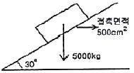
- 1.4
- 1.2
- 1.0
- 0.8
(정답률: 20%)
89. 숏크리트(shotcrote)의 타설 공법 중 습식공법과 비교하여 건식공법에 대한 설명으로 옳지 않은 것은?
- 숏크리트 타설 후 기계청소가 쉽고, 큰 면적의 연속시공이 가능하여 대형 터널에 적합하다.
- 노즐에서 물과 재료가 혼합되므로 작업숙련도/능력에 따라 숏크리트의 품질이 결정된다.
- 시공 중 분진이 과다 발생하고 시멘트/급결제의 분산으로 작업조건이 열악하다.
- 압송거리가 길고, 작은 공기압으로 시공이 가능하다.
(정답률: 48%)
90. 주상절리나 똑바로 선 판상절리가 발달한 화산암으로 구성된 암반 사면에서 주로 발생할 수 있는 사면 파괴의 형태는?
- 원호파괴
- 전도파괴
- 평면파괴
- 쐐기파괴
(정답률: 59%)
91. 다음의 사면안정공법 중 억지공법이 아닌 것은?
- 절토공법
- 식생공법
- 옹벽공법
- 앵커공법
(정답률: 62%)
92. 흙의 전체단위중량은 2.0t/m3이고, 함수비가 16.0%이다. 이 흙의 비중을 2.65라고 할 때 건조단위중량, 공극비 및 포화도는 얼마인가?
- 1.70t/m3, 0.56, 75.5%
- 1.72t/m3, 0.54, 88.3%
- 1.70t/m3, 0.56, 85.3%
- 1.72t/m3, 0.54, 78.5%
(정답률: 27%)
93. 지표면 아래 6m 지점에 지하수면이 존재하는 지반에서 심도 10m 지점의 유효응력은? (단, 이 지반의 전체단위중량 γt=1.6t/m3, 포화단위중량 γsat=1.9t/m3)
- 9.2t/m2
- 11.2t/m2
- 13.2t/m2
- 15.2t/m2
(정답률: 31%)
94. 터널게측은 일상적인 시공관리를 위한 일상계측(계측 A)과 정밀 분석을 위한 정밀계측(계측 B)으로 분류한다. 다음 중 일상계측에 해당하지 않는 것은?
- 터널 내 관찰조사
- 록볼트 인발시험
- 지중변위측정
- 천단침하측정
(정답률: 48%)
95. 터널 굴착 직후 1차 지보재로 사용되는 강지보공(steel rid)에 대한 설명으로 옳지 않은 것은?
- 강지보공은 터널굴착 직후 록볼트 타설 후에 설치한다.
- 강지보공은 암반조건에 관계없이 적용가능하고, 용수 다량 발생 구간에서 다른 지보재에 비해 유리하다.
- 강지보공은 단독 시공 시 암반이 가진 강도를 적극적으로 이용할 수 없다.
- 강지보공의 효과로는 숏크리트 보강, 이완하중 지지, 숏크리트 하중분산 등이 있다.
(정답률: 31%)
96. 막장면에 지지코아를 남기고 터널을 굴착하는 공법으로서 막장면의 안정이 위협되는 지반조건에 적용하는 굴착공법은?
- 링 커트 공법
- 롱벤치 커트 공법
- 측벽 선진 도갱 공법
- 중력분할 공법
(정답률: 60%)
97. 불연속면의 방향성을 고려하여 암반을 평가하는 암반분류법에 해당하지 않는 것은?
- RMR 분류법
- Q 분류법
- RSR 분류법
- SMR 분류법
(정답률: 67%)
98. 다음 그림과 같은 정단층이 발생하기 위한 응력조건에서 수평응력(σh)과 수직응력(σv)의 비(K=σh/σv)로 가장 적당한 것은?
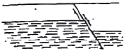
- 0.5
- 1.0
- 1.5
- 2.0
(정답률: 50%)
99. 기계식ㆍ굴착공법인 T.B.M 공법의 장점에 대한 설명으로 틀린 것은?
- 발파공법에 비해 진동과 소음이 크지 않다.
- 이완대의 발달을 줄일 수 있다.
- 지질조건이 변화해도 쉽게 대처할 수 있다.
- 버럭의 크기가 비교적 균일하여 반출작업이 용이하다.
(정답률: 59%)
100. 쇄설성 퇴적암에 해당하는 것은?
- 쳐트
- 셰일
- 석회암
- 대리암
(정답률: 48%)